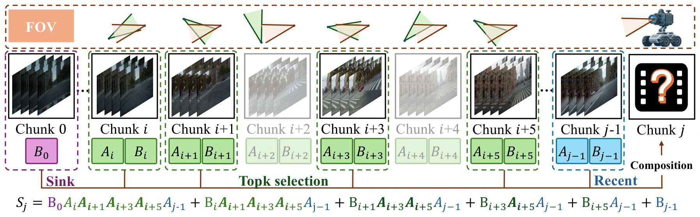
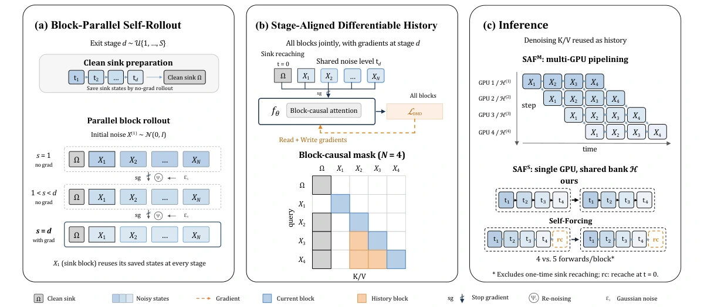
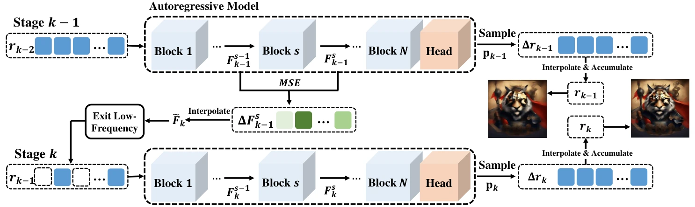
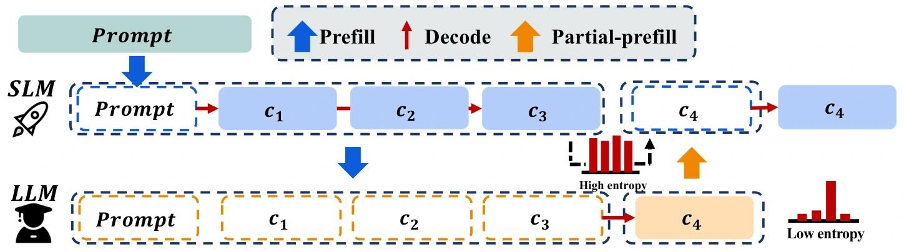
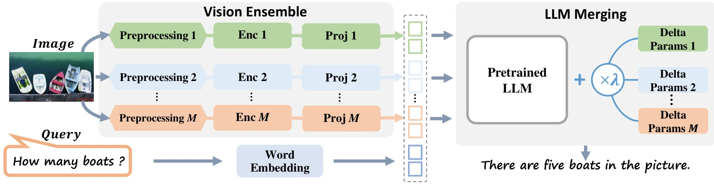
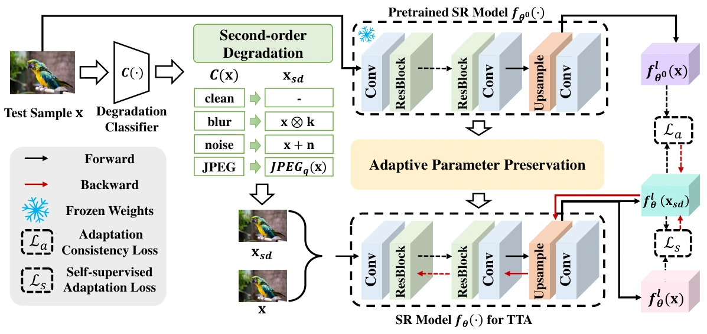
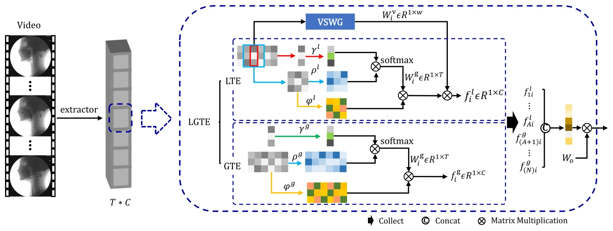

Generative AI & efficient computation
Zhuokun Chen.
Making generative models
more efficient.
My research focuses on efficient generative AI, spanning language, images, and video. I am interested in how models allocate computation and retain useful context—from hybrid linear attention and long-horizon video world models to efficient generation and reasoning.
Efficient generationLong-context modelingVideo world models
02 / Research highlights
All publications ↓Selected research
03 / Publications
A growing body of work10
10 publications · newest first
* Equal contribution (co-first author).
2026

2026
2025

2025

2024

2023

2023

IEEE Journal of Biomedical and Health Informatics
Temporal Micro-action Localization for Videofluoroscopic Swallowing Study
No publications match your search.